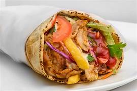

Shaorma Recipe

Description
Shaorma is a popular Middle Eastern dish that originated in the Ottoman Empire, consisting of meat cut into thin slices, stacked in an inverted cone, and roasted on a slowly turning vertical rotisserie or spit. Traditionally made with lamb or mutton, it may also be made with chicken, turkey, beef, or veal. Thin slices are shaved off the cooked surface as it continuously rotates.
Ingredients
- olive oil
- freshly squeezed lemon juice
- onion
- garlic cloves
- chicken thighs and/or, chicken breast
- salt
- black pepper
- turmeric
- pinch of cinnamon
- sweet paprika
Steps
-
Mix the spices together in a bowl. Use a medium-sized plastic bowl for mixing together the garlic powder, paprika, nutmeg, cardamom, and cinnamon. Stir the spices for at least 30 seconds so you have fully mixed them together.
-
Add the chicken strips to the mixture and toss them before drizzling them with olive oil. Just place the chicken strips into the spice mixture and toss them until they have been covered with the spice mixture on both sides. Then, drizzle them with a bit of olive oil and toss them again to make sure that they are fully coated in the olive oil and spice mixture.
-
Prepare your grill. Heat your grill and grease a large piece of aluminum foil. Set it on the grill with the greased side up once the grill is heated.
-
Place the spiced chicken onto the foil. Turn the chicken over a few times, until cooked through. This should take about 8 minutes on each side, depending on the size of the chicken strips. If your grill is smaller, you may have to grill the chicken in 2 batches.
-
Remove the chicken from the grill and place it on a serving platter. You'll need to do this before you can begin to assemble your shawarma.
-
Wrap your chicken in the flatbread with the other ingredients. You can add lettuce, onion, tahini sauce, pickled cabbage, hummus, or whatever other ingredients you’d like to place in the flatbread. Place the chicken in the bread first, followed by the other toppings, pouring on the tahini sauce last. Wrap the flatbread similarly to a burrito, leaving an inch of space between the ingredients and the top of the bread so they don’t pour out. Once you do that, your chicken shawarma will be ready to eat!